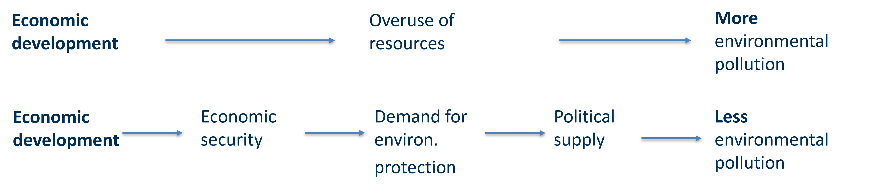
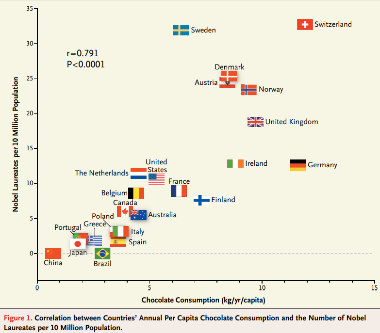
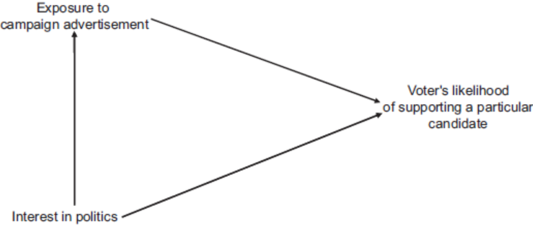

Week 5
University of Mannheim
November 8, 2023
Notes on exercises
Reading strategies
Different types of reading?
How can we read (more) efficiently?
You can find a helpful blog post here.
⏸️ 5 minute break: Get some fresh air, …
Research design
What research designs are there?
How to evaluate a research design?
Any questions?
Based on Chapter 4 - Kellstedt, P. M., & Whitten, G. D. (2018). The fundamentals of political science research. Cambridge University Press.
⏸️ 15 minute break: Get some fresh air, breakfast, a coffe, …
❔ Also: time for questions
It is important to meet deadlines!
For the term paper, late submissions will result in deductions of the grade.
A simple, uniform and readable formatted text makes a better & more professional impression:
Avoid highlighting text with colour
Avoid eye-catching headlines
Use justified print
Use uniform enumeration
If you hand in a document, always try to follow these points (unless requested otherwise):
Include your personal information in the document:
Include a title and the date of submission
Submit the document as a PDF.
If there are no strict rules for the exact formatting or you are unsure about it you can come back to the following:
Font type: Times New Romanm, Calibri, or Arial
Font size: 12 (footnotes in 10)
Line spacing: 1.5 or 2
Margins: 2.5cm on all sides
Avoid color and excessive use of bold font!
Example in Word
Short exercise ~ 5 minutes
Discuss in breakout rooms: How does your reading differ when reading an article about a political event in a newspaper such as the Economist or in an academic journal?
What is your goal? What should you keep in mind?
Collect keywords
Informative reading:
You acquire facts that are of the same kind that you already know
Quantitatively, you know more, but qualitatively, you know nothing new!
Reading to understand:
Understanding findings, interpretations and theoretical arguments! Critical reading.
Independently acquiring scientific knowledge.
There are 4 types of reading. They can be used for different purposes and build on each other starting from the bottom.
Reading for enjoyment (e.g., novels) or informative reading
Not useful, if fundamental knowledge (about the text) is missing.
Asking questions about the text
Search for and develop key words
Make notes! Mark relevant passages in the text & note your own thoughts
Change types of reading
What can I learn from the text?
Systematically reading text in a short time (“read across”) and reading cursorily (“skimming”)
Getting an overview of structure and content
We are not interested in details or thorough understanding of the argument
Useful for the selection of relevant texts and sections
Examining reading
Exercise ~ Reading: 15 minutes, discuss: 5 minutes
Find the key messages of a Foos & Bischof (2022):
What is the (main) research question?
What is the theoretical argument?
What is the key result?
Foos, F., & Bischof, D. (2022). Tabloid media campaigns and public opinion: Quasi-experimental evidence on Euroscepticism in England. American Political Science Review, 116(1), 19-37.
Read the title and subtitle
Read the abstract
Read the headlines
Skim the introduction and the conclusion
Did you manage to find the key messages in 15 minutes?
Could you follow your fellow students?
Do not panic if not! You will get much better with time!
Knowing the text structure
Actively collecting information about the text
Being able to formulate the research question and argument in your own words
Interpreting the text
Understanding the meaning of key words
Comprehending the theoretical argument
Critical reading
Analyze texts in a comparative way
What are similarities? What are differences?
Ask the same questions for different texts and the compare!
Identify the most relevant sections for your own research project
What specifically is relevant?
Developing your own thoughts and write them down right away!
Rarely useful for scientific literature
Possibly useful for initial research on the topic if you are only interested in descriptives
Usually the starting point for a literature search
Many texts that are potentially relevant to you, you should first read in a examining way. You will notice that
they are not relevant after all; t
that they are relevant but that you have sufficiently read them;
or that you still need to read the texts analytically or comparatively
Required reading for seminars or lectures
Texts that you have not yet sufficiently explored in your literature search through examining reading
Texts that you are to present in presentation
Core texts for your term papers, such as those that form the basis for your theoretical argument
Deterministic relationships: ⟶ Physical laws
Probabilistic relationships: ⟶ Social sciences
Democratic peace: It is much less likely that there is war between two democracies than between countries where at least one is a nondemocracy.
Deterministic theory: There is no war between democracies.
Probabilistic theory: It is unlikely that there is war between democracies.

In modern political science, our key goal is to establish whether there are causal relationships between (important) concepts!
Economic development ⟶ democratization
or?
Democratization ⟶ economic development
Is there a credible mechanism that connects X to Y?
Can we eliminate the possibiltiy that Y causes X?
Is there covariation between X and Y?
Have we controlled for all confounding variables Z that might make the association between X and Y spurious?
A relationship between two variables does not imply causality!
In short, this represents an answer to the how and why of the causal relationship. Why and how should a change in X cause a change in Y?
How does a credible causal mechanism look like? The example of economic voting: Variation in economic performance (X) influences the incumbent’s chance of reelection (Y):
Can you answer this: “How might varying economic conditions cause an incumbent’s vote share to vary?
A credible mechanism:
Voters value a strong economy because of low inflation or low unemployment
Voters hold the incumbent responsible for the state of the economy
If the economy is strong: Voters reward the incumbent with their votes

This can be quite difficult:
But also quite clear:
If we cannot dismiss the possibility that Y might cause X, we should proceed with caution!
We have to check if X and Y covary. Or if they are correlated or associated, respectively.
Normally, in order for X to cause Y, there should be some form of correlation between X and Y.
For example: An increase in X is associated with a decrease in Y.
We can demonstrate bivariate connections between two variables easily. More on this later on.
Keep in mind: Correlation does not imply causation!
Usually, dependent variables are influenced by more than one independent variable.
Problem: We need to “control for” the effects of other causes of Y. We call these other causes Z.
If we do not control for Z, we are likely to make the wrong inference about whether X causes Y.
If we find a relationship between X and Y that disappears when controlling for Z, it is a spurious relationship.
Bivariate: The relationship between two variables. Multivariate: The relationship involves multiple variabes
Ronald Inglehart (1988) famously argued that life satisfaction (X) causes democratic stability (Y).
Credible mechanism?
Y causes X?
Covariation?
Spurious relationship?
⟶ Yes, No, Yes, Maybe
Can you think of any variables Z that are likely to confound the relationship?
In an ideal setting:
But:
We can use different strategies - research designs - to help us address the causal hurdles as best as possible!
Imagine: You are an advisor to a candidate running for a political office. The race is close. You still have the budget to run ads on television. Your boss is not sure if it will work and convince voters. What can you do?
What is the causal question embedded in this example?
How can we evaluate this?
Possible idea: Run a focus group. But still: What would the participants have said if they had not been exposed to the ad? We are missing a comparison group!
An experiment is a research design in which the researcher both controls and randomly assigns values of the independent variable to participants.
That means, for example, we can control who sees and who does not see the ad.
In addition, we randomly divide our participants into a treatment group - who will see the ad - and a control group - who will see something else (this is called a placebo).
Random assignment ensures that the comparison between treatment and control group is not polluted by other variables Z.
If our pool of participants is large enough, random assignment further ensures that treatment and control group are identical expect for the random assignment.
This means, any differences in the outcome between the two groups must be due to the independent variable assigned to them.
Imagine: We do not run an experiment and just run the ad. We still are interested in its effectiveness and conduct a survey asking people if they have seen the ad and for their voting intention.
We analyze a random sample of voters and see that people who have seen the ad are more likely to vote for the candidate you advise.
Can we be sure that the ad caused this?
No! People that have seen the ad might be systematically different from people who have not seen the ad.
People who have seen the ad might just be more interested in politics. Therefore, the variable interest in politics could be a confounder (Z).
Using an experimental design, we can eliminate the possibility that Y causes X:
First, X is assigned before Y is measured. This means Y cannot cause X.
Second, X is generated by random assignment. Therefore, Y cannot cause it!
An experiment does not eliminate the possibility that some variable Z influences both X and Y.
But: By random assignment, the treatment and control groups should be identical with regard to every possible variable. Therefore, the comparison between the values of X should be unpolluted by any possible Z variables
Experimental designs are great to address this difficult last hurdle!
Random assignment:
Random sampling:
In short: Selecting cases for a study
Random sampling means that every member of a population has an equal probability of being selected.
Survey experiments are intended to bring both high
internal validity due to random assignment to treatment groups
and external validity due to the benefit a a random sample
They are conducted via in-person, via telephone, but increasingly online.
A field experiment is conducted in peoples’ everyday life. Still, they are randomly assigned in treatment and control group.
A example from economics: Are economic development policies effective? Duflo, Kremer, and Robinson (2011)
Although we as researchers cannot control the values of X and randomly assign the groups ourselves, natural events resemble experiments in important ways
For example, natural disasters:
Treatment group = Citizens that are affected
One could study how being affected by climate change-related natural disasters influences citizens’ vote choice
Researchers have to recruit the participants for their experiments. It is extremely rare that we can draw a random sample from a population
Usually, citizens are recruited via advertisements. Therefore, the participants are not a random sample of any population. This so-called convenience sample means that it is unclear if our results generalize to a broader population.
Our experiment is conducted in an artificial environment.
For example, participants have to watch the political ad. Would the effect be the same in their normal environment, e.g., watching at home?
Experiments might carry ethical dilemmas:
Is it fair that some farmers received free fertilizers and others did not?
If we expose participants to negative campaign ads, do we influence their voting behavior in the real-world?
Researchers have to be conscious about possible consequences of their treatment!
A research design in which the researcher does not have the control over values of the independent variable, which occur naturally.
However, it is necessary that there be some degree of variability in the dependent variable across cases, as well as variation in the dependent variable.
Can we still cross our causal hurdles? Yes!
However, we need to be cautious in our interpretation. Especially, in assessing the last hurdle: Confounders.
There are two pure types we will focus on here:
cross-sectional studies: focus on variation across spatial units at a single time unit
time-series studies: focus on variation within a single spatial unit over multiple time units.
Hybrid designs:
time-series cross sectional: variation over spatial (N) and time (T) units. Typically, T > N.
panel: variation over spatial (N) and time (T) units. Typically, N > T.
Focus on variation between individual spatial units (citizens, districts, countries, …) and explaining the variation in the dependent variable across them.
For example, what is the association between voter preferences in a district (X) and the district’s representatives voting behavior in parliament?
We would need to compare the aggregated preferences of voters from multiple districts with their respective representatives’ voting behavior.
Still: we need to cross our four hurdles to make causal claims!
Focus on comparison over time within a single spatial unit.
For example, what is the association between economic growth and presidential popularity?
We would need measure changes in economic growth and presidential popularity (e.g., aggregated yearly or monthly).
Still: we need to cross our four hurdles to make causal claims!
A big drawback of observational studies is that is very difficult to cross the last causal hurdle.
In theory, we would need to control for all possible confounders
But how can we know that we have controlled for all of them? Usually, we do not know!
Still, we can arrive at the conclusion that X causes Y. However, we need to formulate our conclusion more cautiously. In addition, it is likely that subsequent research will modify this conclusion.
Research designs
Exercise ~ 20 minutes
Now, you have heard about different research designs. What research design would be suitable to test your research question?
Present you research question to the others in your group, then discuss in break out rooms what research design you could use:
Can you cross the four hurdles?
Equipped with this knowledge the advantages and disadvantages of research designs, you can incorporate this into your active reading:
What is the research question?
What is the theoretical argument?
What is the research design? How do they address the four hurdles?
What are the key results & conclusion?
Helpful reading to get started with R:
Guiding questions:
How would you measure the concepts used in your research question?
And where could you find suitable data to test your hypotheses?
Applied Methods of Social Sciences | Winter semester 2023/24 | University of Innsbruck